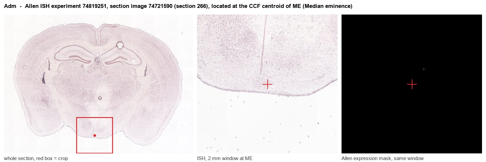
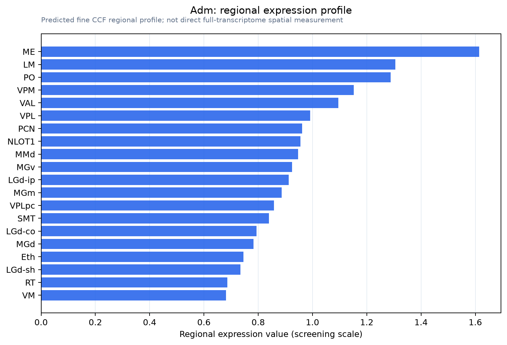

Adm
Spatial tier: REGION_BIASED · Class: OTHER · Top region: ME (Median eminence) · Positive regions: 34/554
45.3Discovery Score
39.2Targetability Score
CEvidence grade C
What this means: Adm: fine CCF profile is region-biased toward ME (top regions: ME, LM, PO, VPM, VAL); this is a discovery lead, not direct proof.
Function in ME: evidence, prediction, innovation
- Gene function
- Adm encodes preproadrenomedullin, processed into adrenomedullin and PAMP. Adrenomedullin is a calcitonin/CGRP-family peptide signalling through calcitonin receptor-like receptor with RAMP2 or RAMP3 to raise cAMP; it is a potent vasodilator and stabiliser of endothelial junctions. Global deletion is embryonically lethal; endothelial deletion gives leaky vessels.
- Region function
- The median eminence is a circumventricular organ where hypophysiotropic axons release GnRH, TRH, CRH, somatostatin and dopamine into fenestrated portal capillaries, and where tanycytes gate access of blood-borne signals to the mediobasal hypothalamus.
- Published in this region
- direct Ueta 2000 found abundant adrenomedullin-immunoreactive fibres and varicosities in the hypothalamo-neurohypophysial tract and specifically the internal zone of the median eminence, and showed ICV adrenomedullin activates PVN/SON oxytocin cells. Shan 2001 mapped high preproADM mRNA in PVN and SON, the neurons projecting through the median eminence, downregulated by LPS, restraint and dehydration. Allen ISH gives ME 1.77-2.00 versus 0.28 for grey matter (experiment 68667655).
- Predicted function
- Prediction: median eminence adrenomedullin derives both from passing neurosecretory axons and from portal endothelium, acting through CALCRL-RAMP2 to set capillary tone and permeability and thus hormone entry into portal blood. Endothelial or neuronal Adm deletion, or local AM(22-52), should change barrier leakiness and blunt stress- and osmotically driven output, appearing as exaggerated drinking and altered vasopressin/oxytocin release.
- Innovation
- ★★★☆☆ 3/5 The peptide was localised to the median eminence two decades ago, yet no cell-type-specific loss of function has been done there.
- Tools
- Adm-null mice (Caron 2001); Adm floxed crossed to endothelial Cre (Ochoa-Callejero 2016); antagonist AM(22-52); adrenomedullin peptide for ICV studies (Samson 1997); Calcrl and Ramp2 mutants; tanycyte access via Rax-CreER lines.
- References
Direct evidence located at the region

Allen ISH experiment 74819251, section image 74721590 (section 266): the section that contains the CCF centroid of Median eminence according to the Allen image-to-atlas alignment (reference_to_image), with a 2 mm window around that point. Left: whole section, red box = window. Middle: ISH signal. Right: Allen's expression-mask view of the same window. open this image in the Allen viewer
Look it up yourself: Allen Mouse Brain ISH for AdmAllen reference atlas: ME (structure 10671)ABC Atlas MERFISH viewer(in the ABC Atlas choose dataset MERFISH-C57BL6J-638850-CCF, colour cells by gene "Adm" or by parcellation_substructure "ME")All genes confined to ME + 3-D brain
Direct spatial evidence
MERFISH REGION LOCATOR

Regional expression figure

Predicted WMB × fine-CCF profile; not direct full-transcriptome spatial measurement.
Spatial profile
Evidence and specificity
- Evidence status
- PREDICTED_FINE
- Direct sources
- None; predicted localization only
- Exclusive threshold
- 12 positive regions out of 554
- Spatial specificity
- 0.302
- Top-region fraction
- 0.048
- Filter status
- PASS
Interpretation limits
- Cell-type-to-region projection is imputed expression, not direct spatial measurement.
- Adult reference atlases do not establish stability across age, sex, strain, state, or disease.
- Transcript abundance does not guarantee protein abundance or genetic-tool performance.